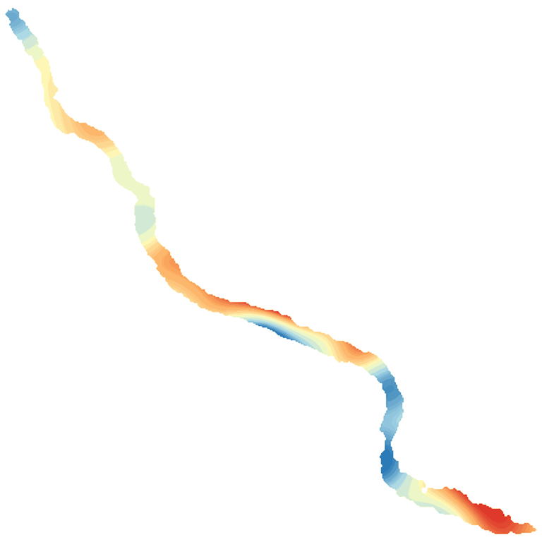

LakeScope › WA
Lake Chelan today
Updated 2026-11-14 - Atlas Labs
Clear water, 49°F water, level falling, 2 ft below normal, calm this morning.
Water level
1091.46 ft
USGS gauge 12451200 - 2026-11-14
7-day trend: falling (-0.76 ft). Compared with normal for this date: -1.5 ft (same weeks, 2018-2025).
Water clarity and algae
Clear water Last clear view: over a week ago. 3 cloudy passes since.
Surface temperature
49°F
seen from space on 2026-11-08

Ice
Open - 0% ice cover
Estimate from weather and satellite, not a measurement. Check the ice yourself before going on it.
Weather, next 3 days
| Day | Sky | High / low | Wind | Rain |
|---|---|---|---|---|
| Saturday | Mostly Sunny | 54 / 44°F | 1 mph E | 9% |
| Sunday | Light Rain Likely | 52 / 38°F | 1 mph S | 69% |
| Monday | Mostly Sunny | 49 / 35°F | - mph | 2% |
Sunrise 07:05 - sunset 16:23 - Waxing crescent. National Weather Service.
Get the LakeScope app: alerts and the 3-D view of Lake Chelan